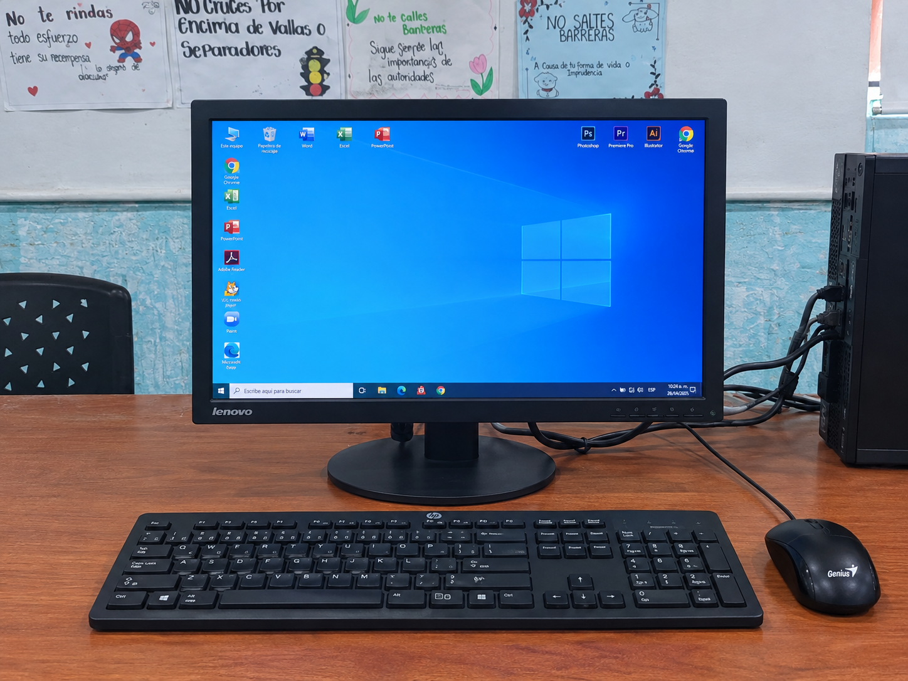

01. EQUIPOS DE CÓMPUTO
Computadores de mesa
Equipos informáticos de escritorio destinados al trabajo lectivo, formación técnica y desarrollo de prácticas académicas por parte de la comunidad estudiantil.
